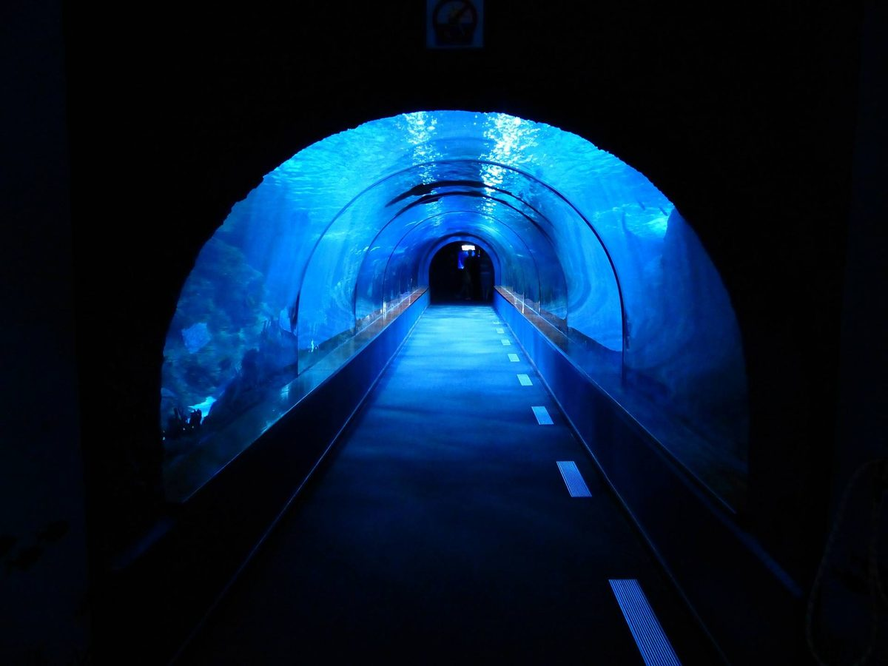

我是一隻魚
2017-12-01

魚群一擁而上，搶食飄浮在水面的麵皮屑，又一隻隻地泅回層層文件的深海。
〈我是一隻魚〉
十幾層樓的清水模建築，一格一格的水泥方框，中間鑲嵌大片玻璃，總長度超過百米，商辦、百貨、旅宿各佔一方。
陽光透過大片玻璃灑進辦公室，她像一隻深海魚，淹沒在大量文件底下，不見光。脖子不自覺地往螢幕傾斜、很淺的呼吸、突出的眼睛，緊緊咬著牙根。
跟時間賽跑，越過代辦清單，放低身段躲過河豚主管的刺、烏賊客戶的烏煙瘴氣。直到肚子出聲提醒她的餓。
尷尬。吞下口水也騙不過抗議的胃。偏頭痛像一根細針卡住左腦。
外送到，魚群們一擁而上，搶食每月一次的午餐會披薩。月底的恩賜，賜福每一尾月光族。她小心翼翼地游過辦公桌椅的縫隙，到吧台抓一片，剝下麵皮咀嚼。
「叮咚～」手機跳出訊息，「這個月貸款的錢還沒繳喔？那些帳單順便了啊。」神出鬼沒的電鰻，給她最後一擊。
是，僅以披薩敬我親愛的爹娘。是，客戶的使命必達。是，主管說的都是對的。是，你們說的都是對的。
電話鈴轟轟作響，她站在玻璃帷幕前，無味地看著樓下生態公園裡來來往往的人們。
來往的人們讚歎這棟精工打造的水族箱大樓。百貨樓層推出時尚新品，櫥窗模特身上的裙擺搖曳，寶石項鍊在陽光下閃得晶瑩剔透，坐臥如一尾美人魚。
整個城市，都是我的修羅場
故事柑仔店
與您共度加班時刻。